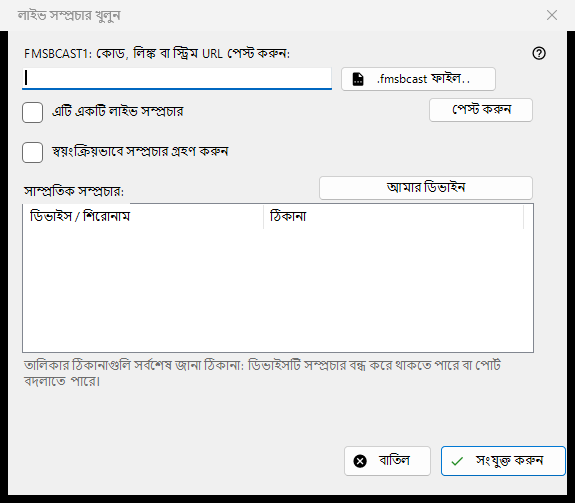
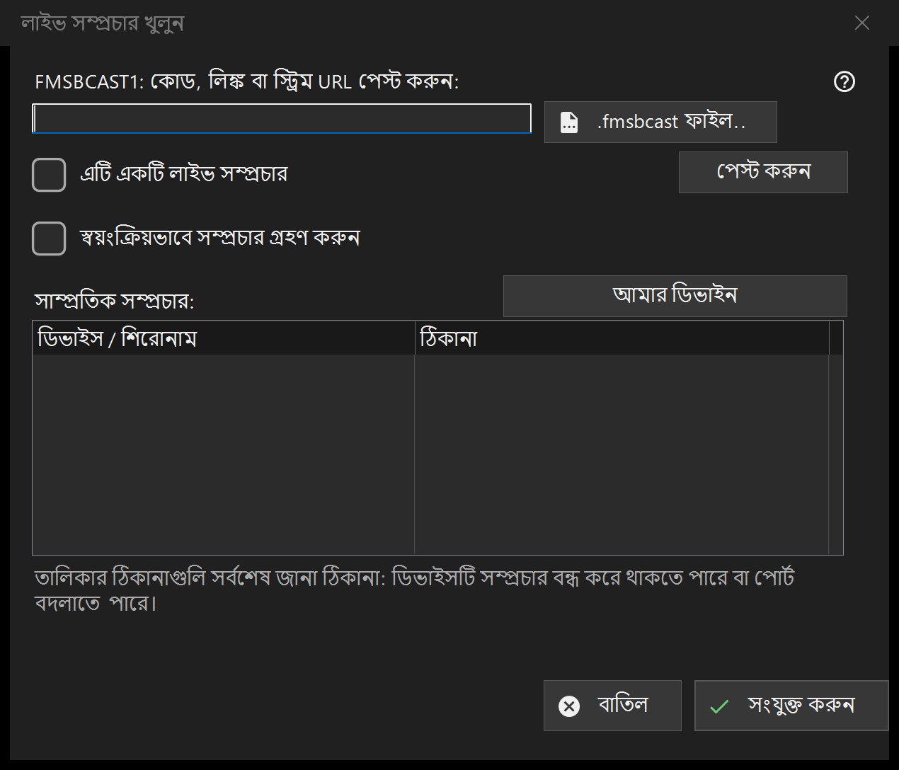

লাইভ সম্প্রচার
এটি কীসের জন্য
FMSBCAST1: কোড, লিংক বা স্ট্রিম URL পেস্ট করুন অথবা .fmsbcast ফাইল বেছে নিন। সাধারণ URL কেবল লাইভ উৎস হলে লাইভ হিসেবে চিহ্নিত করুন; অন্যথায় এটি চাহিদামতো মিডিয়া হিসেবে খুলবে। সংযোগ চাপুন এবং চাইলে দর্শকের পাসওয়ার্ড দিন। সম্প্রচারক থামলে বা পোর্ট বদলালে সাম্প্রতিক ঠিকানা অকার্যকর হতে পারে। স্বয়ংক্রিয় Cast গ্রহণ একটি আলাদা স্পষ্ট পছন্দ।


এই ক্রমে
FMSBCAST1: কোড, লিংক বা স্ট্রিম URL পেস্ট করুন অথবা .fmsbcast ফাইল বেছে নিন। সাধারণ URL কেবল লাইভ উৎস হলে লাইভ হিসেবে চিহ্নিত করুন; অন্যথায় এটি চাহিদামতো মিডিয়া হিসেবে খুলবে। সংযোগ চাপুন এবং চাইলে দর্শকের পাসওয়ার্ড দিন। সম্প্রচারক থামলে বা পোর্ট বদলালে সাম্প্রতিক ঠিকানা অকার্যকর হতে পারে। স্বয়ংক্রিয় Cast গ্রহণ একটি আলাদা স্পষ্ট পছন্দ।
উপাদানসমূহ
FMSBCAST1: / .fmsbcast
FMSBCAST1: কোড, লিংক বা স্ট্রিম URL পেস্ট করুন অথবা .fmsbcast ফাইল বেছে নিন। সাধারণ URL কেবল লাইভ উৎস হলে লাইভ হিসেবে চিহ্নিত করুন; অন্যথায় এটি চাহিদামতো মিডিয়া হিসেবে খুলবে। সংযোগ চাপুন এবং চাইলে দর্শকের পাসওয়ার্ড দিন। সম্প্রচারক থামলে বা পোর্ট বদলালে সাম্প্রতিক ঠিকানা অকার্যকর হতে পারে। স্বয়ংক্রিয় Cast গ্রহণ একটি আলাদা স্পষ্ট পছন্দ।
ম্যানেজার সেটিংস · SFTP শেয়ারিং সেটিংস · এক্সচেঞ্জ সার্ভার সেটিংস